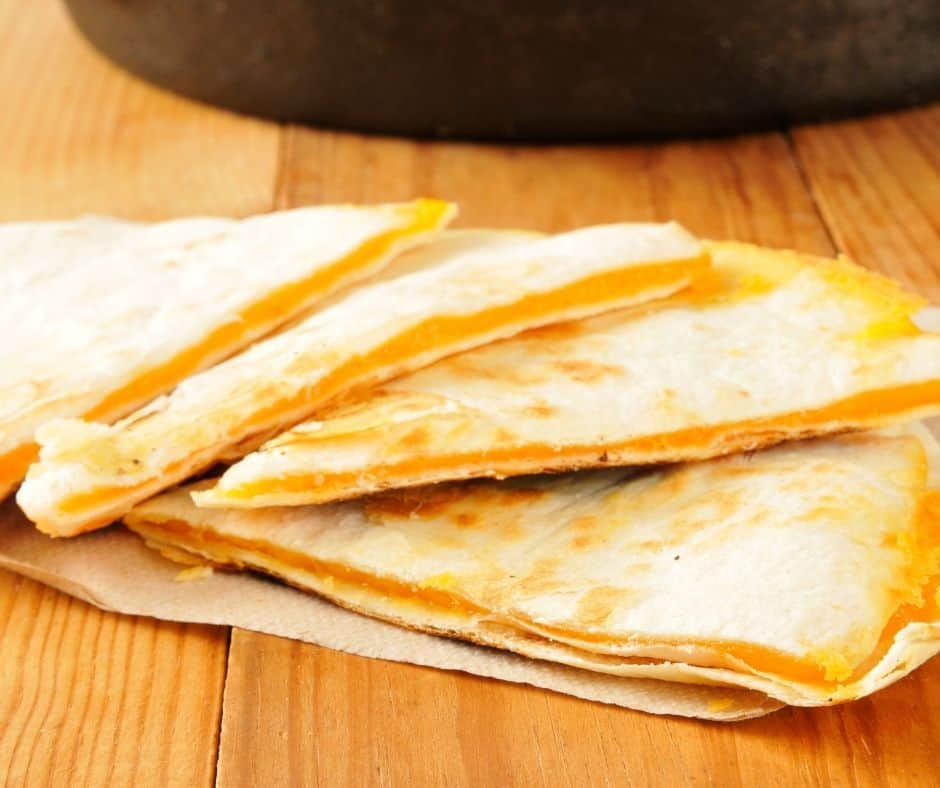

Quesodilla

Descripton
Nice and melty, hits the spot when you want something kinda fatty and unhealthy.
Ingredients
- 1 large flour tortilla
- Quarter of a stick of butter
- Salt and pepper to taste
- 2 cups shredded chedder cheese
Steps
- Put frying pan on medium heat, and start to melt the butter.
- Place tortilla in pan, flat.
- Flip once after about 20 secs.
- Layer cheese on to start to melt.
- After cheese is starting to melt, fold over tortilla.
- Flip tortilla to prvent burning.